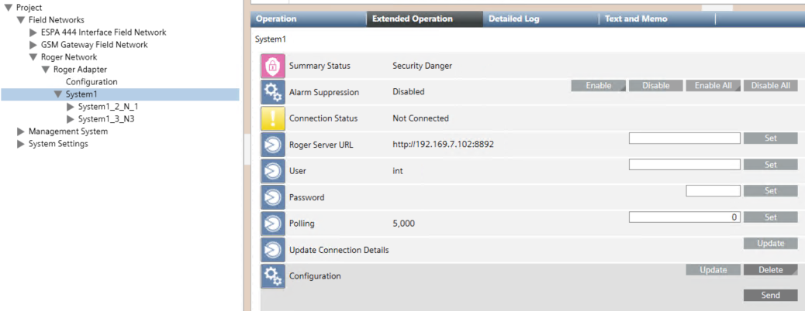

Removing a Roger RACS5 System
If necessary, you can delete a Roger RACS5 system from the Desigo CC configuration.
You do that in the Roger RACS5 System<n> node, which corresponds to the affected Roger RACS5 system <n>, with <n> being the sequential system number, starting from 1.
- Select Project > Field Networks > [SORIS network] > [Roger RACS5 adapter] > [System<n>]
- In the Extended Operation tab, in Configuration, select Delete and then Send.
- All system objects are removed from System Browser.
